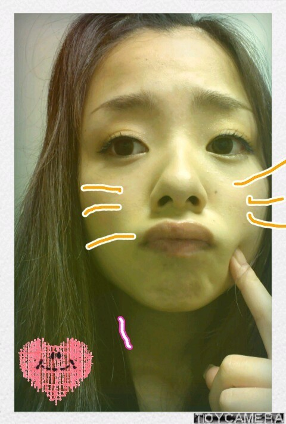

今日は改めて自己紹介を含めながら
色々と聞いてもらおっかな〃ω〃
まだまひろのこと
全然知らない人も良かっら
たまには見てね(*^^*))笑
さっそく書いていきます＾＾
ほいっ♪こんにちわぁ〜(⌒‐⌒)
大阪出身、16才、
川村真洋(まひろ)です♪
ニックネームは「ろってぃー♪」です^^
歌も大好きで一度イベントで
歌を歌わせて頂きました(*^^*)
その時は 絢香さんの「三日月」を
歌いました。
カラオケによく行きます=・ω・=
好きな色は いっぱいあり過ぎです。
一つしかダメとしたら「白」☆
ちなみに 自分の部屋は
白と茶色...★☆★
それに、 海や夕日、アフリカの動物達のハガキや写真を置いたり飾ったりしております(*^^*)
メンバーの中で 一番シンプルのお部屋？
ん〜
机や棚、じゅうたん、鏡
全部白です^^
じゅうたんが真っ白って言うのは
なるべく避けたかったんですけど、
茶色ねたじゅうたんが売ってなくて...ω
ベッドは木で 布団が
茶色、こげ茶、白の大胆なシマシマ。♪
南国系が好きです〃ω〃
前はよく、電気消して
オレンジの電気灯して
いい匂いするキャンドルに火つけて
ゆったりしてました(*^^*)
そ-いや 最近してないね(--;)
自分のいい所は、
食べ物の好き嫌いが無いとこと♪
と、
苦しいことも、悲しいことも
どーにかしてポジティブに考え
乗り越えること=・ω・=
自分の嫌いところは、
小・中の頃は気 よわくて、
何か言われても言い返せない自分が
嫌でした。
気強くならんとっ!って思ってました。
あと、 前より太ったこと 笑
昨日、メンバー達に、
中2の時のダンスの、PV を見てもらったら
『めっちゃ、細いね゜o゜!』
って驚かれました。><
まりかに
「いつの間にこんな顔丸なってん!」
って頬っぺ 引っ張られた...・ω・#
...
ごめんなさいm(__)m
ダイエット頑張ります=・ω・=!!
以上っ、ろってぃー♪でした
(⌒‐⌒)
